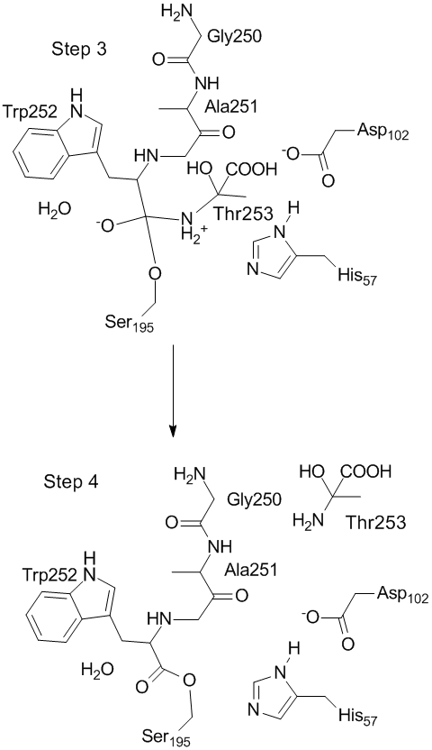

(Modeling proteins) (Chymotrypsin Mechanism: Step 1, Step 2, Step 3, Step 4, Step 5, Step 6)
 There is no transition state for the reaction Step3 → Step 4. At the start of this reaction, the peptide bond is a Zwitterion. As the bond between Trp252 and Thr253 is steadily stretched, the peptide bond weakens, and the Zwitterionic nature changes and two neutral species are formed. This reaction is activationless. Frame 1, 2, 3, 4, 5, 6, 7, 8, 9 Palindrome Animation Animation off Atoms within 5 Å Atoms within 9 Å All Atoms |